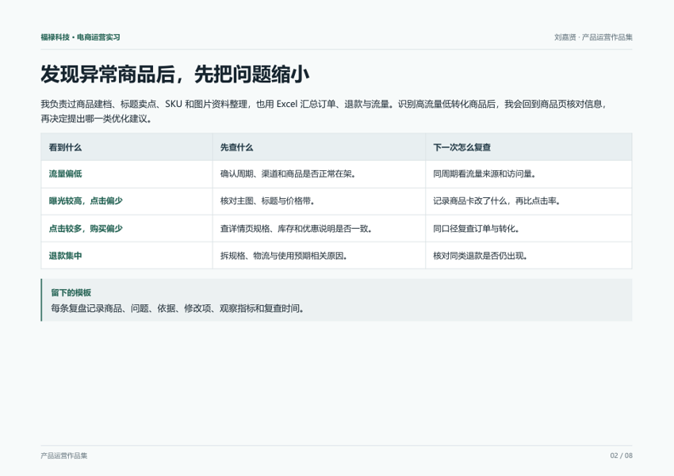
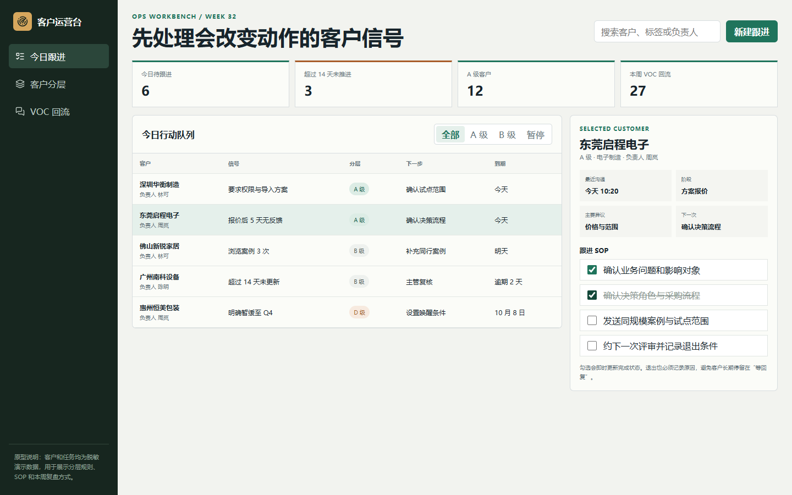
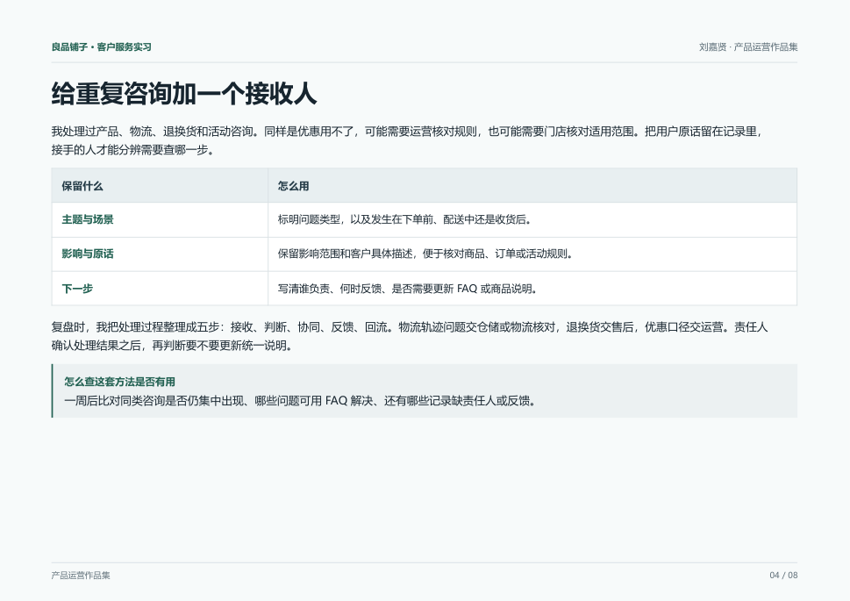

商品指标树电商运营实习
福禄科技 · 商品与详情页
把上架检查与异常商品复盘串起来，按流量、点击、转化、退款定位。
查看案例产品运营作品集
从商品运营和用户反馈出发，我把上架检查、重复咨询和客户跟进整理成 SOP、问题清单与复盘规则。


商品指标树电商运营实习
把上架检查与异常商品复盘串起来，按流量、点击、转化、退款定位。
查看案例
VOC 标签模板客户服务实习
把重复咨询归入 VOC 问题库，标明场景、影响与回流对象。
查看案例基于岗位场景的运营方案
让客户分层进入今日队列，对应跟进节奏、负责人和时限。
查看案例先区分流量、点击、转化和退款问题，再决定改哪个环节。
保留原话和发生场景，标明责任人和回流对象。
A/B/C/D 层级对应跟进节奏、时限和唤醒条件。
电商运营实习 · 商品运营
整理上架字段与详情页内容，用订单、退款和流量报表识别异常商品。复盘时明确修改项与观察指标。
看对应案例 ↗客户服务实习 · 用户反馈
将产品、物流、售后和活动咨询归类，跟进门店、仓库与售后处理进度。案例整理了 VOC 标签和回流清单。
看对应案例 ↗销售 · 客户分层与跟进
记录客户来源、需求与阶段，按优先级安排跟进。基于岗位场景设计运营台原型和 SOP。
看对应案例 ↗东北大学 · 工商管理硕士在读
湖北工业大学 · 电子商务本科
迭代记录
异常商品复盘新增问题证据、修改项、观察指标和复查时间。客户运营也用相同方法，把每条问题绑定到责任人、反馈时限和回流对象。
先区分流量、点击、转化和退款问题，再决定改哪个环节。
保留原话和发生场景，标明责任人和回流对象。
A/B/C/D 层级对应跟进节奏、时限和唤醒条件。
电商运营实习
在福禄科技实习时，我负责商品建档与详情页内容整理，并汇总订单、退款和流量数据。异常复盘模板用于记录检查项与复查时间。
客户服务实习
在良品铺子实习时，我处理商品、物流、售后与活动咨询，跟进跨部门处理进度。VOC 标签与服务 SOP 是对重复问题的整理。
基于岗位场景的运营方案
艾利佳销售岗位涉及客户分层和跟进记录。我将这些工作动作转成运营台原型与试点计划。